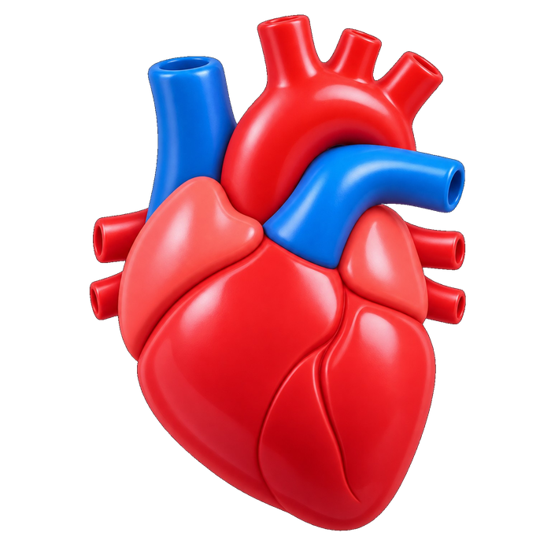
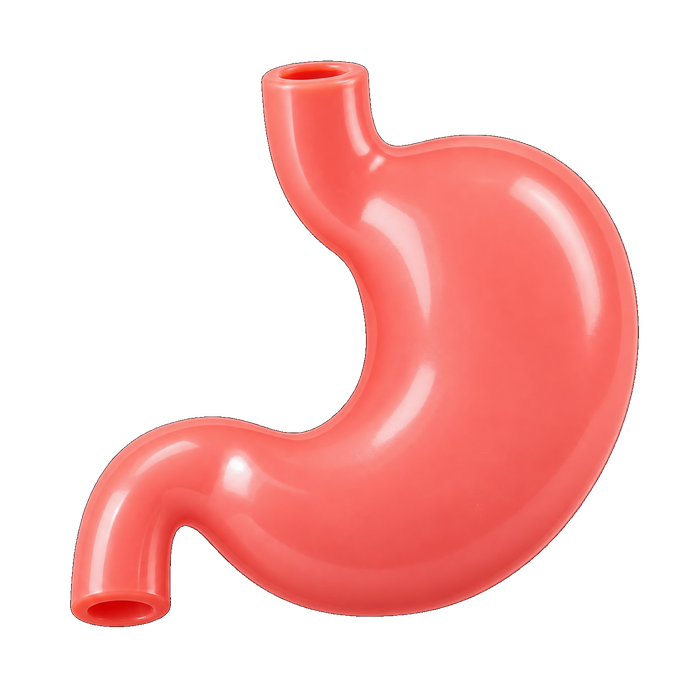
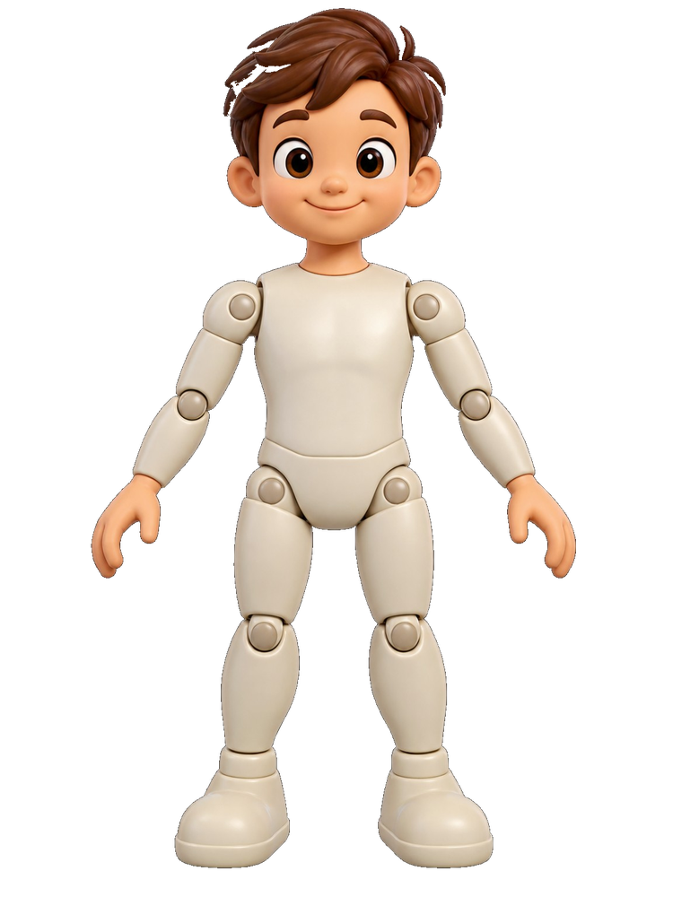

JOGO EDUCATIVO • 6+
Explore o laboratório, encontre as quatro peças anatômicas e encaixe cada uma no lugar certo.
Funciona offline depois de instalado ou carregado uma vez.

♡ESTAÇÃO DE MONTAGEM
Arraste cada órgão até a região correta.

Você encontrou e encaixou coração, pulmões, estômago e intestinos.